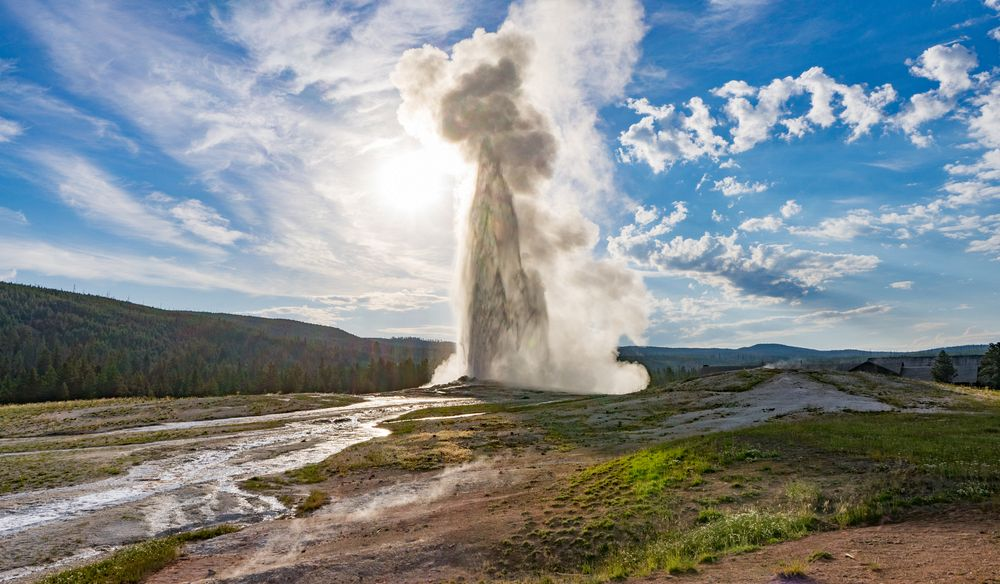
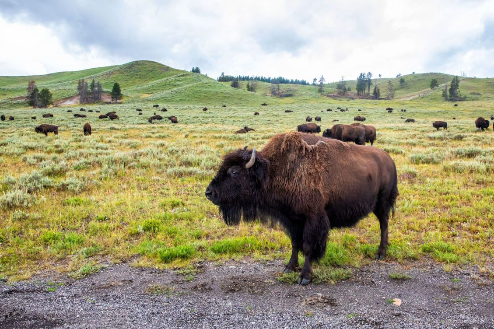

Yellowstone National Park is an American national park located mostly in Wyoming, with small sections in Montana and Idaho. It was established by the U.S. Congress and signed into law by President Ulysses S. Grant on March 1, 1872. Yellowstone was the first national park in the U.S. and is also widely held to be the first national park in the world. The park is known for its wildlife and its many geothermal features, especially Old Faithful geyser, one of its most popular features. It has many types of ecosystem, but the subalpine forest is the most abundant. It is part of the South Central Rockies forests ecoregion.
Native Americans have lived in the Yellowstone region for at least 11,000 years. Aside from visits by mountain men during the early-to-mid-19th century, organized exploration did not begin until the late 1860s. Management and control of the park originally fell under the jurisdiction of the Secretary of the Interior, the first being Columbus Delano. However, the U.S. Army was subsequently commissioned to oversee management of Yellowstone for a 30-year period between 1886 and 1916. In 1917, administration of the park was transferred to the National Park Service, which had been created the previous year. Hundreds of structures have been built and are protected for their architectural and historical significance, and researchers have examined more than a thousand archaeological sites.
Yellowstone National Park spans an area of 3,468.4 square miles (8,983 km2), comprising lakes, canyons, rivers and mountain ranges.Yellowstone Lake is one of the largest high-elevation lakes in North America and is centered over the Yellowstone Caldera, the largest supervolcano on the continent. The caldera is considered a dormant volcano. It has erupted with tremendous force several times in the last two million years. Half of the world's geysers and hydrothermal features are in Yellowstone, fueled by this ongoing volcanism. Lava flows and rocks from volcanic eruptions cover most of the land area of Yellowstone. The park is the centerpiece of the Greater Yellowstone Ecosystem, the largest remaining nearly-intact ecosystem in the Earth's northern temperate zone. In 1978, Yellowstone was named a UNESCO World Heritage Site.
Hundreds of species of mammals, birds, fish, and reptiles have been documented, including several that are either endangered or threatened. The vast forests and grasslands also include unique species of plants. Yellowstone Park is the largest and most famous megafauna location in the contiguous United States. Grizzly bears, wolves, and free-ranging herds of bison and elk live in this park. The Yellowstone ark bison herd is the oldest and largest public bison herd in the United States. Forest fires occur in the park each year; in the large forest fires of 1988, nearly one third of the park was burnt. Yellowstone has numerous recreational opportunities, including hiking, camping, boating, fishing and sightseeing. Paved roads provide close access to the major geothermal areas as well as some of the lakes and waterfalls. During the winter, visitors often access the park by way of guided tours that use either snow coaches or snowmobiles.
Wikipedia link for more information